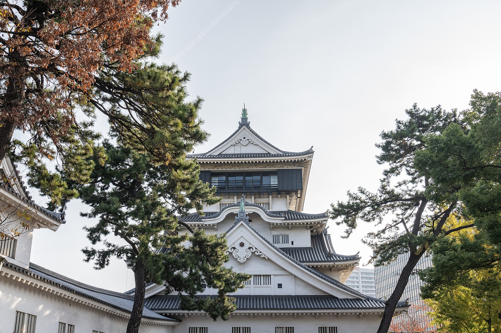
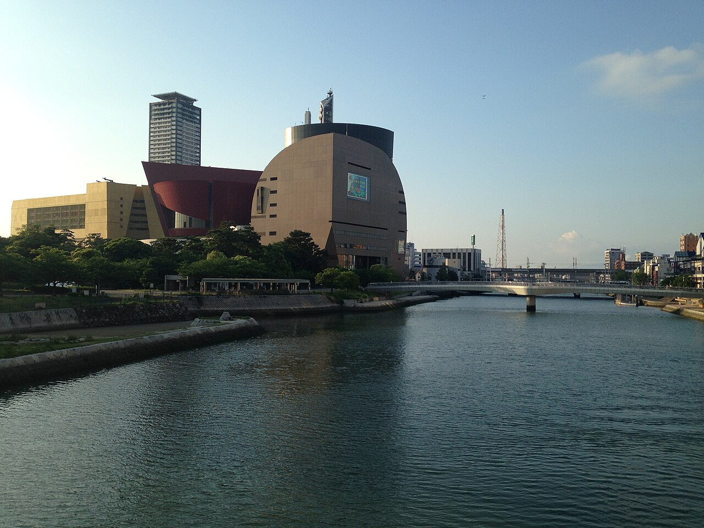
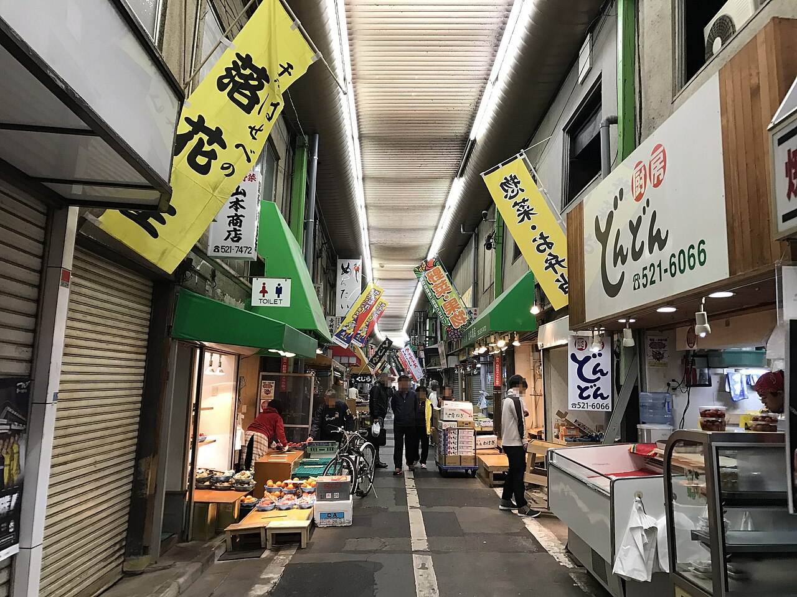

01
小倉城
KOKURA CASTLE街なかで出会う、堂々とした天守。1602年に細川忠興が築いた城を、現在の天守は1959年の再建によって伝えています。展示を楽しんだら、最上階から小倉の街を眺めてみて。
公式サイト・開城情報福岡県北九州市・小倉
お城のある風景。川沿いのひと休み。
市場で出会う、いつものおいしさ。
次の休日は、小倉を気ままに歩こう。

HELLO, KOKURA
福岡県北九州市の小倉。駅から街へ踏み出すと、
城下町の面影と、今を生きる街の表情が重なります。
目的地へまっすぐ行くのもいいけれど、
気になる路地や、川辺の景色に少しだけ寄り道を。
その時間が、きっと小倉の思い出になるはず。
PLACES TO WANDER
気になる場所から、ひとつずつ。
街なかで出会う、堂々とした天守。1602年に細川忠興が築いた城を、現在の天守は1959年の再建によって伝えています。展示を楽しんだら、最上階から小倉の街を眺めてみて。
公式サイト・開城情報
水辺でひと息小倉城のまわりに広がる勝山公園と、そばを流れる紫川。散策の合間は、水辺でひと休み。橋の向こうへ歩けば、また違った街の表情に出会えます。
公園の公式案内
暮らしをのぞく2017年撮影・再整備前。現在の景観・店舗配置とは異なります。
鮮魚やお惣菜、郷土の味が集まる「北九州の台所」。お店をのぞき、気になる一品を見つける。小倉の食と暮らしを、ぐっと身近に感じられる場所です。
市場の公式サイトA TASTE OF KOKURA
旅の途中に食べたいのは、
この街で親しまれてきた味。
お腹の空き具合に合わせて、どうぞ。
YOUR LITTLE JOURNEY
JR小倉駅からはじまる、散策プラン。
城も、市場も、ご当地の味も。小倉の魅力を少しずつ楽しむ、はじめての街歩きに。
本サイトが提案する散策例です。所要時間は見学・休憩込みの目安で、混雑や歩く速さにより変わります。工事中の道は現地の案内に従ってください。
小倉城口（南口）側から、まち歩きのスタート。
アーケードをぶらり。焼うどんなど、気になるランチを。
お店の営業を確かめて、買い物や手みやげ探しを。
水辺の景色を眺めながら、城のある公園へ。
展示や眺めを楽しんだら、駅まで気ままに歩いて戻ろう。
BEFORE YOU GO
山陽新幹線やJR在来線が乗り入れる小倉駅。中心部の散策は小倉城口（南口）から。運行時刻や乗換は鉄道会社の最新情報をご確認ください。
「小倉」は現在の北九州市小倉北区・小倉南区にあたる地域。本ガイドは小倉北区の中心部を紹介しています。
今回のコースは小倉駅周辺の中心部を歩く提案です。歩きやすい靴で、休憩を挟みながら。暑さや雨、体調に合わせて無理のない範囲で楽しみましょう。
再整備に伴い、店舗や通路の状況が変わることがあります。営業日・時間は店舗ごとに異なり、日曜休みのお店もあります。公式案内を確認してから訪れてください。
魚町銀天街のアーケードや、小倉城の屋内展示を組み合わせるのも一案です。施設間の移動では屋外を歩くため、雨具を用意してください。
各スポットの「公式サイト」リンクをご利用ください。イベントなどで変更される場合があるため、お出かけ当日の情報確認がおすすめです。
SEE YOU IN KOKURA
次の休日は、小倉でよりみち。
散策コースをもう一度